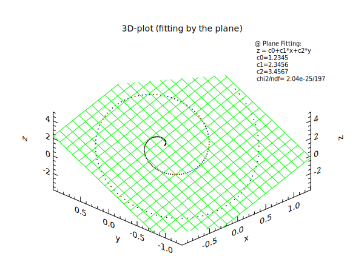

opt (lw:0 st:dot)
fmt .2f
@ ndata = 200
@ p0 = 1.2345
@ p1 = 2.3456
@ p2 = 3.4567
@ pi4 = 3.14159265*4
set t = range([ndata],0,[pi4])
set x = 0.1*t*cos(t)
set y = 0.1*t*sin(t)
set z = [p0] + [p1]*x + [p2]*y
div 1 1
title "3D-plot (fitting by the plane)"
plot3 x y z
fit3 x y z plane (cf:c lc:green cp:0.7,0.99 rc:1 ts:0.7)
print input p0=[p0] p1=[p1] p2=[p2]\n
print fitted c0=[c0] c1=[c1] c2=[c2]\n
